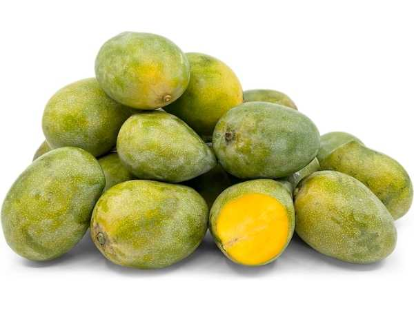

Mangifera indica 'Himam Pasand'
Common Names: Himam Pasand, Imam Pasand, Himayat
Local Name: Himam Pasand (Telugu/Tamil), Himayat (Hyderabad)
Family: Anacardiaceae
Origin: Andhra Pradesh, India
Plant Type: Large evergreen tree, 10–15 meters tall
Variety: Himam Pasand — premium, large-fruited, rich-flavored dessert mango
Average Lifespan: 40–100+ years
| Growth Habit | Large, vigorous tree with broad, spreading canopy |
| Plant Size | 10–15 meters tall; canopy spread 8–12 meters |
| Leaves | Simple, alternate, lanceolate, 20–35 cm long; new leaves pinkish-bronze turning glossy dark green |
| Flowers | Small, yellowish-white in large terminal panicles (25–40 cm long) |
| Flower Characteristics | Both male and bisexual flowers on same panicle; mildly fragrant |
| Fruit | Large, oblique-oval, 400–700 g; thin skin, rich saffron-orange pulp, virtually fiberless, intensely sweet and aromatic |
| Fruit Color | Green turning golden-yellow with crimson-red blush when ripe |
| Seed Characteristics | Large monoembryonic seed; thin, papery endocarp |
| Root System | Deep taproot with extensive lateral root system |
| Climate | Tropical to subtropical; needs distinct dry period for flowering |
| Temperature Range | 24–33°C ideal; tolerates up to 45°C; frost-sensitive |
| Rainfall Requirement | 750–2000 mm annually; dry spell before flowering essential |
| Soil Type | Deep, well-drained alluvial, red loam, or black cotton soil |
| Soil pH Preference | 5.5–7.5 |
| Sun Requirement | Full sun (8+ hours daily) |
| Spacing | 8–10 meters between trees |
| Irrigation Method | Basin or drip irrigation; withhold water during flowering to improve fruit set |
| Water Requirement | Moderate; drought-tolerant once established |
| Can it Grow in Pots? | Young grafted trees in large pots (50+ liters); will limit size and yield |
| Fertilizer Schedule | 3 times per year — pre-flowering, post-fruit set, post-harvest |
| Recommended Organic Fertilizers | FYM (25–50 kg/tree/year), neem cake, bone meal, vermicompost, wood ash |
| Pesticide Frequency | 2–3 sprays during flowering and fruiting season |
| Recommended Organic Pesticides | Neem oil, panchagavya, garlic-chili spray, methyl eugenol traps for fruit flies |
| Mulching Practice | Organic mulch around base; keep 15 cm away from trunk |
| Training System | Open center or modified leader system |
| Pruning Time | After harvest (July–August) |
| How to Prune | Remove dead, diseased, and crossing branches; tip-prune to encourage lateral growth |
| Common Pests | Mango hopper, fruit fly, stem borer, mealybug, scale insects |
| Common Diseases | Anthracnose, powdery mildew, bacterial canker, die-back |
| Disease Prevention & Remedies | Copper oxychloride sprays, proper spacing, remove fallen debris, avoid injuries to bark |
| Flowering Months | January–March (South India) |
| Fruiting Season | May–July; mid-season variety |
| Days to Harvest | 110–135 days from flowering |
| Harvest Indicators | Fruit develops golden-yellow color with red blush; shoulders fill out; strong sweet aroma |
| Average Yield per Plant | 80–150 fruits per tree (mature); prone to alternate bearing |
| Pollination Type | Cross-pollination by insects (flies, bees) |
| Pollination Notes | Low fruit set (1–2% of flowers); houseflies are primary pollinators |
| Commercial Production Regions | Andhra Pradesh, Telangana, Tamil Nadu, Karnataka |
| Market Uses | Premium table fruit, gift-grade mango, juice |
| Processing Uses | Pulp, juice, desserts; primarily consumed fresh due to premium quality |
| Market Value (Approx.) | ₹150–400 per kg; one of the most expensive Indian mango varieties |
| Calories | 60 kcal per 100g |
| Dietary Fiber | 1.6 g per 100g |
| Vitamin C | 36 mg per 100g |
| Vitamin A | 1082 IU per 100g |
| Iron | 0.16 mg per 100g |
| Potassium | 168 mg per 100g |
| Antioxidants | Beta-carotene, mangiferin, quercetin, gallic acid |
| Other Key Nutrients | Folate, vitamin B6, copper, vitamin E, natural sugars (14–18% TSS) |
| Immune Support | High vitamin C and A content boosts immunity |
| Anti-inflammatory Properties | Mangiferin and gallic acid exhibit anti-inflammatory and antioxidant activity |
| Digestive Health | Digestive enzymes (amylase) in ripe fruit aid digestion |
| Heart Health | Fiber, potassium, and antioxidants support cardiovascular health |
Disclaimer: Information provided is for educational purposes only and not a substitute for medical advice.
Add your field observations here.